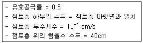
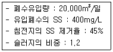
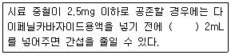
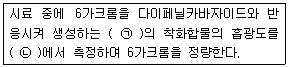
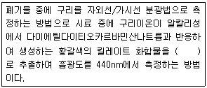

폐기물처리기사 (2013-03-10 기출문제)
1과목: 폐기물 개론
1. 도시폐기물을 파쇄할 경우 X90=2.5cm로 하여 구한 X0(특성입자)는? (단, Rosin Rammler 모델 적용, n=1)
- 약 1.1cm
- 약 1.3cm
- 약 2.5cm
- 약 1.7cm
(정답률: 67%)

2. 폐기물 적재차량 중량이 15,000kg, 빈 차의 중량이 11,000kg, 적재함의 크기는 가로 300cm, 세로 150cm, 높이 200cm일 때 단위용적당 적재량(t/m3)은?
- 0.22
- 0.31
- 0.36
- 0.44
(정답률: 70%)
3. 고형물의 처리방법 중 열분해에 관한 설명으로 틀린 것은?
- 소각처리에 비해 황 및 중금속이 회분 속에 고정되는 비율이 크다.
- 환원성 분위기가 유지되므로 Cr3+이 Cr6+으로 변화되는 일이 없다.
- 연소가 고도의 발열반응임에 비해 열분해는 고도의 흡열반응이다.
- 유기물질을 충분한 산소가 공급해서 가열하여 가스, 액체 및 고체의 3성분으로 분리하는 방법이다.
(정답률: 74%)
4. 인구가 50,000명, 1인 1일 쓰레기 배출량은 1kg이다. 쓰레기 밀도가 320kg/m3라고 할 때, 적재량이 20.4m3 차량이 하루에 몇 번 운반해야 하는가? (단, 차량 1대 기준이며 기타 조건은 고려하지 않음)
- 4회
- 6회
- 8회
- 10회
(정답률: 65%)
5. 투입량이 1ton/h이고, 회수량이 750kg/h(그중, 회수 대상물질은 600kg/h)이며 제거량 중 회수대상물질은 70kg/h일 때 선별효율은? (단, Worrell식 적용)
- 약 45%
- 약 49%
- 약 54%
- 약 59%
(정답률: 63%)
6. 폐기물의 성상분석 단계로 가장 알맞은 것은?
- 건조 → 물리적 조성분석 → 분류(가연, 불연성) → 절단 및 분쇄 → 화학적 조성분석
- 건조 → 분류(가연, 불연성) → 물리적 조성분석) → 발열량 측정 → 화학적 조성분석
- 밀도측정 → 물리적 조성분석 → 건조 → 분류(가연, 불연성) → 절단 및 분쇄 → 화학적 조성분석
- 밀도측정 → 전처리 → 물리적 조성분석 → 분류
(정답률: 84%)
7. 폐기물의 운송을 돕기 위하여 압축할 때, 부피감 소율(Volume Reduction)이 45%이었다. 압축비 (Compaction Ratio)는?
- 1.42
- 1.82
- 2.32
- 2.62
(정답률: 72%)
8. 어느 도시의 폐기물 수거량이 2,500,000톤/년, 수거인부 3,000명, 1일 작업시간 8시간, 연간 작업일 수 340일 일 때 MHT는?
- 약 2.38
- 약 2.83
- 약 3.26
- 약 3.62
(정답률: 67%)
9. 함수율 95%인 폐기물 10톤을 탈수를 통해 함수율을 각각 85% 및 75%로 감소시킨 경우, 탈수 후 남은 무게(톤)는 각각 얼마인가? (단, 비중은 1.0 기준)
- 3.33 및 2.00
- 3.33 및 2.50
- 5.33 및 3.00
- 5.33 및 3.50
(정답률: 67%)
10. 적환장 필요성에 대한 다음 설명 중 가장 옳은 것은?
- 초기에 대용량 수집차량을 사용할 때
- 불법투기와 다량의 어질러진 쓰레기가 발생할 때
- 고밀도 거주지역이 존재할 때
- 공업지역으로 폐기물 수집에 대형용기를 많이 사용할 때
(정답률: 71%)
11. 폐기물 발생량 조사방법 중 주로 산업폐기물의 발생량을 추산할 때 사용하는 것은?
- 적재차량계수분석
- 직접계근법
- 물질수지법
- 경향법
(정답률: 50%)
12. 함수율이 77%인 하수슬러지 20ton을 함수율 26%인 1000ton의 폐기물과 섞어서 함께 처리하고자 한다. 이 혼합폐기물의 함수율은? (단, 비중은 1.0기준)
- 27%
- 29%
- 31%
- 34%
(정답률: 60%)
13. 슬러지를 처리하기 위하여 생슬러지를 분석한 결과 수분은 90%, 총 고형물 중 휘발성 고형물은 70%, 휘발성 고형물의 비중은 1.1, 무기성 고형물의 비중은 2.2였다. 생슬러지의 비중은? (단, 무기성 고형물 + 휘발성 고형물 = 총 고형물)
- 1.023
- 1.032
- 1.041
- 1.⑤3
(정답률: 50%)
14. 폐기물 발생량 예측방법 중 하나의 수식으로 쓰레기 발생량에 영향을 주는 각 인자들의 효과를 총괄적으로 나타내어 복잡한 시스템의 분석에 유용하게 사용할 수 있는 것은?
- 상관계수 분석모델
- 다중회귀 모델
- 동적모사 모델
- 경향법 모델
(정답률: 77%)
15. 1t/m3의 밀도를 갖는 쓰레기 시료를 압축하여 밀도를 3t/m3으로 증가시켰다. 이때의 부피감소율은?
- 58%
- 67%
- 75%
- 82%
(정답률: 74%)
16. 인구 5만명인 어느 도시에서 쓰레기를 소각처리하기 위해 분리수거를 하고 있다. 조사결과 아래와 같은 자료를 얻었을 때 가연성분 전량을 소각로로 운반하는데 필요한 차량은 몇 대인가? (단, 쓰레기 조성 : 가연성 60wt%, 불연성 40wt%, 쓰레기 발생량 : 1.8kg/인·일, 쓰레기 차의 적재밀도 : 0.6t/m3, 쓰레기차의 적재용량 : 4.5m3, 적재율 : 0.8, 수거차 일일 평균 왕복회수 : 3회/대·일, 일일 기준)
- 6대
- 9대
- 12대
- 14대
(정답률: 50%)
17. 다음 중 폐기물의 파쇄목적이 잘못 기술된 것은?
- 입자 크기의 균일화
- 밀도의 증가
- 유가물의 분리
- 비표면적의 감소
(정답률: 58%)
18. 전단파쇄기에 대한 설명으로 틀린 것은?
- 고정칼, 왕복 또는 회전칼과의 교합에 의하여 폐기물을 전단한다.
- 대체로 충격파쇄기에 비하여 파쇄속도가 느리다.
- 충격파쇄기에 비하여 이물질 혼입에 강하다.
- 충격파쇄기에 비하여 파쇄물의 크기를 고르게 할수 있다.
(정답률: 79%)
19. 다음 중 폐기물의 관거(Pipeline)를 이용한 수거 방식에 관한 설명으로 옳지 않은 것은?
- 자동화, 무공해화가 가능하다.
- 잘못 투입된 폐기물의 즉시 회수가 용이하다.
- 가설 후에 경로변경이 곤란하고 설치비가 높다.
- 장거리 수송이 곤란하다.
(정답률: 79%)
20. 수거노선 설정방법으로 틀린 것은?
- 언덕인 경우 위에서 내려가며 수거한다.
- 반복운행을 피한다.
- 출발점은 차고와 가까운 곳으로 한다.
- 반시계방향으로 설정한다.
(정답률: 73%)
2과목: 폐기물 처리 기술
21. 매립장에서 침출된 침출수가 다음과 같은 점토로 이루어진 90cm의 차수층을 통과하는데 걸리는 시간은 얼마인가?

- 약 8년
- 약 10년
- 약 12년
- 약 14년
(정답률: 50%)
22. 유기적 고형화 기술에 대한 설명으로 틀린 것은? (단, 무기적 고형화 기술과 비교)
- 수밀성이 크며 처리비용이 고가이다.
- 미생물, 자외선에 대한 안정성이 강하다.
- 방사성 폐기물처리에 적용한다.
- 최종 고화체의 체적 증가가 다양하다.
(정답률: 65%)
23. 슬러지처리를 하기 위해 위생처리장 활성슬러지 (함수율 99%) 40m3를 농축조에 넣어 농축한 결과 슬러지의 농도가 35,000mg/L가 되었다. 농축된 슬러지의 양(m3)은? (단, 슬러지 비중은 1.0으로 가정함)
- 약 8.4
- 약 11.4
- 약 21.4
- 약 23.4
(정답률: 45%)
24. 6.3%의 고형물을 함유한 150,000kg의 슬러지를 농축한 후, 농축슬러지를 소화조로 이송할 경우의 농축 슬러지의 무게는 70,000kg이다. 이때 농축된 슬러지의 고형물 함유율은? (단, 슬러지의 비중은 1.0으로 가정하고, 상등액의 고형물함량은 무시한다.)
- 11.5%
- 13.5%
- 15.5%
- 17.5%
(정답률: 50%)
25. 다음과 같은 조건의 침전지에서 1일 발생하는 슬러지의 부피는? (단, 기타사항은 고려하지 않음)

- 2.5m3
- 3.0m3
- 3.5m3
- 4.0m3
(정답률: 43%)
26. 혐기성 소화공법에 비해 호기성 소화공법이 갖는 장 · 단점이라 볼 수 없는 것은?
- 상등액의 BOD농도가 낮다.
- 소화슬러지량이 많다.
- 소화슬러지의 탈수성이 좋다.
- 운전이 쉽다.
(정답률: 42%)
27. COD/TOC＜ 2.0, BOD/COD＜ 0.1, 인 고령화된 매립지에서 발생되는 침출수 처리의 효율성이 불량한 공정은? (단, COD(mg/L)는 500보다 작다)
- 이온교환수지
- 활성탄
- 화학적 침전(석회투여)
- 역삼투공정
(정답률: 15%)
28. 점토의 수분함량 지표인 소성지수, 액성한계, 소성한계의 관계로 옳은 것은?
- 소성지수 = 액성한계 - 소성한계
- 소성지수 = 액성한계 + 소성한계
- 소성지수 = 액성한계 / 소성한계
- 소성지수 = 소성한계 / 액성한계
(정답률: 47%)
29. 1일 쓰레기 발생량이 100t인 도시의 쓰레기를 깊이 3.0m의 도랑식(Trench)으로 매립하는데 발생된 쓰레기 밀도 500kg/m3, 도랑 점유율 60%, 부피감소율이 40%일 경우, 3년간 필요한 부지면적은 몇 m2인가? (단, 기타 조건은 고려하지 않음)
- 약 43000
- 약 53000
- 약 63000
- 약 73000
(정답률: 38%)
30. 어느 하수처리장에서 발생한 생슬러지 내 고형물은 유기물(VS)이 85%, 무기물(FS)이 15%로 구성되어 있으며, 이를 혐기소화조에서 처리하자 소화슬러지 내 고형물은 유기물(VS)이 70%, 무기물(FS)이 30%로 되었다면 이 때 소화율은?
- 45.8%
- 48.8%
- 54.8%
- 58.8%
(정답률: 59%)
31. 호기성 소화방식으로 분뇨를 500m3/day로 처리하고자 한다. 1차 처리에 필요한 산기관수는? (단, 분뇨 BOD 20,000mg/L, 1차 처리효율 60%, 소요공기량 50m3/BOD kg, 산기관 통풍량 0.5m3/min·개)
- 367개
- 417개
- 447개
- 487개
(정답률: 42%)
32. 글리신(C2H5O2N) 5mole이 혐기성소화에 의해 완전 분해될 때 생성 가능한 이론적인 메탄가스량은? (단, 표준상태 기준, 분해 최종산물은 CH4, CO2, NH3)
- 84L
- 96L
- 108L
- 120L
(정답률: 14%)
33. 다음 슬러지의 물의 형태 중 탈수성이 가장 용이한 것은?
- 모관결합수
- 표면부착수
- 내부수
- 입자경계수
(정답률: 62%)
34. 함수율 95% 분뇨의 유기탄소량이 TS의 35%, 총 질소량은 TS의 10%이다. 이와 혼합할 함수율 20%인 볏짚의 유기탄소량이 TS의 80%이고 총 질소량이 TS의 4%라면 분뇨와 볏짚의 무게비 2:1로 혼합했을 때 C/N비는? (단, 비중은 1.0, 기타 사항은 고려하지 않음)
- 약 16
- 약 18
- 약 20
- 약 22
(정답률: 32%)
35. 진공 여과 탈수기로 투입되는 슬러지량이 240m3/hr이고 슬러지 함수율 98%, 여과율(고형물기준)이 120kg/m2·hr의 조건을 가질 때 여과면적은? (단, 탈수기는 연속가동하며 슬러지 비중은 1.0 기준)
- 40m2
- 50m2
- 60m2
- 70m2
(정답률: 57%)
36. 폐기물 매립지에 소요되는 연직차수막과 표면차 수막의 비교설명으로 잘못된 것은?
- 연직차수막은 지중에 수직방향의 차수층이 존재하는 경우에 적용한다.
- 표면차수막은 매립지 지반의 투수계수가 큰 경우에 사용되는 방법이다.
- 표면차수막에 비하여 연직차수막의 단위면적당 공사비는 비싸지만 총 공사비로는 싸다.
- 연직차수막은 지하수 집배수시설이 불필요하나 표면차수막은 필요하다.
(정답률: 39%)
37. 함수율이 95%이고 고형물 중 유기물이 70%인 하수슬러지 300m3/일을 소화시켜 유기물의 2/3가 분해되고 함수율 90%인 소화슬러지를 얻었다. 소화슬러지의 양은? (단, 슬러지 비중은 1.0)
- 80m3/일
- 90m3/일
- 100m3/일
- 110m3/일
(정답률: 20%)
38. 1일 폐기물 배출량이 700t인 도시에서 도랑(Trench)법으로 매립지를 선정하려 한다. 쓰레기의 압축이 30%가 가능하다면 1일 필요한 면적은? (단, 발생된 쓰레기의 밀도는 250kg/m3, 매립지의 깊이는 2.5m)
- 약 634m2
- 약 784m2
- 약 854m2
- 약 964m2
(정답률: 56%)
39. 복잡퇴비화시 함수율 85%인 슬러지와 함수율 40%인 톱밥을 1:2로 혼합한 후의 함수율과 퇴비화의 적정성 여부에 관한 설명으로 옳은 것은?
- 혼합 후 함수율은 65%로 퇴비화에 부적절한 함수율이라 판단된다.
- 혼합 후 함수율은 65%로 퇴비화에 적절한 함수율이라 판단된다.
- 혼합 후 함수율은 55%로 퇴비화에 부적절한 함수율이라 판단된다.
- 혼합 후 함수율은 55%로 퇴비화에 적절한 함수율이라 판단된다.
(정답률: 44%)
40. 폐기물의 고화처리방법 중 피막형성법의 장점으로 옳은 것은?
- 화재위험성이 없다.
- 혼합률이 높다.
- 에너지 소요가 적다.
- 침출성이 낮다.
(정답률: 62%)
3과목: 폐기물 소각 및 열회수
41. 건조 슬러지의 원소분석 결과 분자식이 C5H7O2N이라면 이 슬러지 10kg을 완전 연소하는데 필요한 이론 공기의 질량(kg)은? (단, 표준상태 기준)
- 약 55kg
- 약 60kg
- 약 65kg
- 약 70kg
(정답률: 8%)
42. 분자식이 CmHn인 탄화수소가스 1Sm3의 완전연소에 필요한 이론 공기량(Sm3/Sm3)은?
- 3.76m+1.19n
- 4.76m+1.19n
- 3.76m+1.83n
- 4.76m+1.83n
(정답률: 57%)
43. Rotary Kiln 소각로에 대한 설명으로 틀린 것은?
- 액상이나 고상의 여러 가지 폐기물을 동시에 처리할 수 있다.
- 로 내에서의 공기의 유출이 크고 대기오염 제어 시스템에 분진 부하율이 높다.
- 비교적 열효율이 높은 편이다.
- 대체로 예열, 혼합, 파쇄 등 전처리 없이 주입이 가능하다.
(정답률: 34%)
44. 가로 1.2m, 세로 2.0m, 높이 11.5m의 연소실에서 저위발열량 10,000kcal/kg의 중유를 1시간에 100kg 연소한다. 연소실 열발생률(kcal/m3·hr)은?
- 약 29,300
- 약 36,300
- 약 43,300
- 약 51,300
(정답률: 58%)
45. 착화온도에 대한 설명 중 틀린 것은?
- 화학결합의 활성도가 클수록 착화온도는 낮다.
- 분자구조가 간단할수록 착화온도는 낮다.
- 화학반응성이 클수록 착화온도는 낮다.
- 화학적으로 발열량이 클수록 착화온도는 낮다.
(정답률: 62%)
46. 고위발열량이 16,820kcal/Sm3인 에탄(C2H6)을 연소시킬 때 이론 연소온도(℃)는? (단, 이론습연소 가스량 21Sm3/Sm3이며, 연소가스의 정압비열은 0.63 kcal/Sm3·℃, 연소용 공기, 연료온도는 15℃, 공기는 예열하지 않으며, 연소가스는 해리되지 않음)
- 약 1132
- 약 1154
- 약 1178
- 약 1196
(정답률: 57%)
47. 처리가스유량이 2000m3/hr이고 여과포의 유효면적이 5m2일 때 여과집진장치의 겉보기 여과속도(cm/s)는?
- 11.1cm/s
- 14.8cm/s
- 17.8cm/s
- 19.8cm/s
(정답률: 48%)
48. 메탄 3Sm3를 공기과잉계수 1.2로 완전연소시킬 경우 습윤연소가스량(Sm3)은?
- 약 23.1
- 약 28.2
- 약 31.2
- 약 37.3
(정답률: 37%)
49. 유동층 소각로의 장단점으로 틀린 것은?
- 가스의 온도가 높고 과잉공기량이 많다.
- 투입이나 유동화를 위해 파쇄가 필요하다.
- 유동매체의 손실로 인한 보충이 필요하다.
- 기계적 구동부분이 적어 고장률이 낮다.
(정답률: 59%)
50. 도시쓰레기 1톤을 소각처리하고자 한다. 쓰레기의 조성이 C:70%, H:20%, O:10%일 때 이론 공기량은?
- 약 6300Sm3
- 약 8300Sm3
- 약 9300Sm3
- 약 11300Sm3
(정답률: 50%)
51. 수분이 적고 저위발열량이 높은 폐기물에 적합하며 폐기물의 이송방향과 연소가스 흐름방향이 같은 소각방식은?
- 향류식
- 병류식
- 교류식
- 복류식
(정답률: 50%)
52. 옥탄(C8H18)이 완전연소할 때 AFR은? (단, kgmol air/kg mol fuel)
- 15.1
- 29.1
- 32.5
- 59.5
(정답률: 56%)
53. 백필터를 통과한 가스의 분진농도가 8mg/Sm3이고 분진의 통과율이 10%라면 백필터를 통과하기 전 가스중의 분진농도는?
- 0.08g/m3
- 0.80g/m3
- 8.8g/m3
- 0.88g/m3
(정답률: 46%)
54. 전기 집진장치에 관한 내용으로 틀린 것은?
- 배출가스의 온도강하가 크다.
- 전압변동과 같은 조건변경에 적응하기 어렵다.
- 회수할 가치가 있는 입자의 포집이 가능하다.
- 압력손실이 적고 고온가스의 처리가 가능하다.
(정답률: 50%)
55. 어떤 폐기물의 원소조성이 다음과 같을 때 연소시 필요한 이론 공기량은? (단, 중량기준, 표준상태기준으로 계산함) [가연성분:70%(C:60%, H:10%, O:25%, S:5%), 회분:30%]
- 6.65kg/kg
- 7.15kg/kg
- 8.35kg/kg
- 9.45kg/kg
(정답률: 48%)
56. 화상부하율이 300kg/m2·hr인 연소실에 가연성 폐기물을 하루 7ton을 소각시킬 때 필요한 연소실의 화상면적(m2)은? (단, 하루 8시간 소각을 행한다)
- 약 2
- 약 3
- 약 4
- 약 5
(정답률: 67%)
57. 열교환기 중 과열기에 관한 설명으로 틀린 것은?
- 보일러에서 발생하는 포화증기에 다수의 수분이 함유되어 있으므로 이것을 과열하여 수분을 제거하고 과열도가 높은 증기를 얻기 위해 과열기를 설치한다.
- 과열기의 재료는 탄소강을 비롯 니켈, 크롬 등을 함유한 특수 내열 강관을 사용하고 있다.
- 과열기는 그 부착위치에 따라 전열 형태가 다르다.
- 일반적으로 보일러의 부하가 높아질수록 방사과열기에 의한 과열온도가 상승한다.
(정답률: 47%)
58. 어떤 소각로에서 배출되는 가스량은 8000kg/hr이고 온도는 1000℃(1기압 기준)이다. 배기가스는 소각로 내에서 2초가 체류한다면 소각로 용적(m3)은? (단, 표준상태에서 배기가스 밀도는 0.2kg/m3)
- 약 84
- 약 94
- 약 104
- 약 114
(정답률: 38%)
59. SO2 100kg의 표준상태에서 부피는? (단, SO2는 이상기체이고, 표준상태로 가정한다)
- 63.3m3
- 59.5m3
- 44.3m3
- 35.0m3
(정답률: 63%)
60. 메탄 80%, 에탄 11%, 프로판 6%, 나머지는 부탄으로 구성된 기체연료의 고위 발열량이 10000kcal/Sm3이다. 기체연료의 저위발열량(kcal/Sm3)은? (단, 메탄:CH4, 에탄:C2H6, 프로판:C3H8, 부탄:C4H10, 부피기준)
- 약 8100
- 약 8300
- 약 8500
- 약 8900
(정답률: 47%)
4과목: 폐기물 공정시험기준(방법)
61. pH 측정에 관한 설명으로 옳지 않은 것은?
- pH는 가능한 현장에서 측정하며 pH 측정기의 값을 0.1 단위까지 잃어 결과 보고한다.
- 기준전극은 은-연화은의 칼로멜 전극 등으로 구성되어 있다.
- pH 미터의 지시부에는 비대칭 전위조절 기능 및 온도보정 기능이 있다.
- pH 미터는 임의의 한 종류의 pH 표준용액에 대하여 검출부를 정제수로 잘 씻은 다음 5회 되풀이하여 pH를 측정하였을 때 그 재현성이 ±0.⑤ 이내이어야 한다.
(정답률: 54%)
62. 시료 채취시 시료용기에 기재하는 사항과 가장 거리가 먼 것은?
- 폐기물의 명칭
- 폐기물의 성분
- 채취 책임자 이름
- 채취시간 및 일기
(정답률: 54%)
63. 다음은 크롬(자외선/가시선 분광법 기준) 정량시 간섭물질에 관한 내용이다. 괄호 안에 옳은 내용은?

- 피로인산나트륨·10수화물용액(5%)
- 과망간산칼륨용액(0.025N)
- 아질산나트륨용액(0.025N)
- 피리딘피라졸른용액(5%)
(정답률: 29%)
64. 다음 총칙에 관한 내용으로 옳은 것은?
- “방울수”라 함은 0℃에서 정제수 20방울을 적하할 때 그 부피가 약 1mL 되는 것을 말한다.
- “정확히 취하여”라 함은 규정한 양의 액체를 홀피펫으로 눈금까지 취하는 것을 말한다.
- “항량으로 될 때까지 강열한다”라 함은 같은 조건에서 1시간 더 강열하여 전·후 무게의 차가 g당 0.1mg 이하일 때를 말한다.
- “약”이라 함은 기재된 양에 대하여 ±5% 이상의 차가 있어서는 안 된다.
(정답률: 57%)
65. 다음 분석항목 중 원자흡수분광광도법 측정이 적용되지 않는 것은? (단, 폐기물공정시험기준(방법)기준)
- 구리
- 비소
- 시안
- 수은
(정답률: 65%)
66. 폐기물의 강열감량(%)과 유기물 함량(%)을 구하고자 측정한 결과, 도가니 무게:50.43g, 탄화(강열) 전의 도가니+시료 무게:74.59g, 탄화(강열) 후의 도가니+시료 무게:55.23g 이었다면 강열감량과 유기물 함량은? (단, 수분 20%, 고형물 80%)
- 강열감량 : 약 25%, 유기물함량 : 약 75%
- 강열감량 : 약 25%, 유기물함량 : 약 94%
- 강열감량 : 약 80%, 유기물함량 : 약 75%
- 강열감량 : 약 80%, 유기물함량 : 약 94%
(정답률: 44%)
67. 다음은 6가크롬(자외선/가시선 분광법)의 측정원리에 관한 내용이다. 괄호 안에 옳은 내용은?

- ㉠ 적자색 ㉡ 540nm
- ㉠ 적자색 ㉡ 460nm
- ㉠ 황갈색 ㉡ 520nm
- ㉠ 황갈색 ㉡ 420nm
(정답률: 71%)
68. 폐기물공정시험기준(방법)에 적용되는 관련용어에 관한 내용으로 틀린 것은?
- 반고상폐기물 : 고형물의 함량이 5%이상 15% 미만의 것을 말한다.
- 비함침성 고상폐기물 : 금속판, 구리선 등 기름을 흡수하지 않는 평면 또는 비평면형태의 변압기 내부 부재를 말한다.
- 바탕시험을 하여 보정한다 : 규정된 시료로 같은 방법으로 실험하여 측정치를 보정하는 것을 말한다.
- 정밀히 단다 : 규정된 양의 시료를 취하여 화학저울 또는 미량저울로 칭량함을 말한다.
(정답률: 65%)
69. 시료의 전처리 방법에 관한 설명으로 틀린 것은?
- 질산-염산 분해법은 유기물 등을 많이 함유하고 있는 대부분의 시료에 적용되며 칼슘, 바륨, 납 등을 다량 함유한 시료는 난용성염을 생성한다.
- 회화법은 목정 성분이 400℃ 이상에서 휘산되지 않고 쉽게 회화할 수 있는 시료에 적용된다.
- 질산-과염소산-불화수소산 분해법은 다량의 점토질 또는 규산염을 함유한 시료에 적용된다.
- 마이크로파 산분해가 끝난 후 충분히 용기를 냉각시키고 용기 내에 남아있는 질산가스를 제거한다.
(정답률: 48%)
70. 분석하고자 하는 대상폐기물의 양이 100톤 이상 500톤 미만인 경우에 채취하는 시료의 최소수는?
- 30개
- 36개
- 45개
- 50개
(정답률: 65%)
71. 기체크로마토그래피를 이용한 유기인의 정량방법에 관한 설명으로 틀린 것은?
- 정량한계는 사용하는 장치 및 측정조건에 따라 다르나 각 성분당 0.00⑤mg/L이다.
- 검출기로는 질소인 검출기 또는 불꽃광도 검출기를 이용한다.
- 정제용 칼럼으로는 실리카겔 칼럼, 플로리실 칼럼, 활성탄 칼럼을 사용한다.
- 운반기체는 순도 99.99% 이상의 헬륨을 사용하며 유량은 0.1~0.5mL/min으로 한다.
(정답률: 25%)
72. 자외선/가시선 분광광도계의 광원부의 광원 중자외부의 광원으로 주로 사용되는 것은?
- 중수소 방전관
- 텅스텐 램프
- 나트륨 램프
- 중공음극 램프
(정답률: 67%)
73. pH 표준용액 조제에 관한 설명으로 옳지 않은 것은?
- 조제한 pH 표준용액은 경질유리병 또는 폴리에틸렌병에 보관한다.
- 염기성 표준용액은 산화칼슘 흡수관을 부착하여 1개월 이내에 사용한다.
- 현재 국내외에 상품화 되어있는 표준용액을 사용할 수 있다.
- pH 표준용액용 정제수는 묽은 염산을 주입한 후 증류하여 사용한다.
(정답률: 40%)
74. 기름성분을 중량법으로 측정할 때 정량한계 기준은?
- 0.1% 이하
- 1.0% 이하
- 3.0% 이하
- 5.0% 이하
(정답률: 62%)
75. 비소(자외선/가시선 분광법)분석 시 발생되는 비화수소를 다이에틸다이티오카르바민산은 피리딘 용액에 흡수시키면 나타나는 색은?
- 적자색
- 청색
- 황갈색
- 황색
(정답률: 43%)
76. 다음의 실험 총칙에 관한 내용 중 틀린 것은?
- 연속측정 또는 현장측정의 목적으로 사용하는 측정기기는 공정시험기준에 의한 측정치와의 정확한 보정을 행한 후 사용할 수 있다.
- 분석용 저울은 0.1mg까지 달 수 있는 것이어야 하며 분석용 저울 및 분동은 국가검정을 필한 것을 사용하여야 한다.
- 공정시험기준에 각 항목의 분석에 사용되는 표준 물질은 특급시약으로 제조하여야 한다.
- 시험에 사용하는 시약은 따로 규정이 없는 한 1급 이상의 시약 또는 동등한 규격의 시약을 사용하여 각 시험항목별 '시약 및 표준용액'에 따라 조제하여야 한다.
(정답률: 65%)
77. 정도보증/정도관리에 적용하는 기기검출한계에 관한 내용으로 옳은 것은?
- 바탕시료를 반복측정 분석한 결과의 표준편차에 2배 한 값
- 바탕시료를 반복측정 분석한 결과의 표준편차에 3배 한 값
- 바탕시료를 반복측정 분석한 결과의 표준편차에 5배 한 값
- 바탕시료를 반복측정 분석한 결과의 표준편차에 10배 한 값
(정답률: 50%)
78. 함수율이 95%인 시료의 용출시험 결과를 보정하기 위해 곱하여야 하는 값은 얼마인가?
- 1.5
- 2.0
- 2.5
- 3.0
(정답률: 65%)
79. 시안(자외선/가시선 분광법 기준) 시험방법에 대한 설명으로 틀린 것은?
- 폐기물 중에 시안의 정량한계는 0.01mg/L이다.
- 시안화합물을 측정할 때 방해물질들은 증류하면 대부분 제거된다.
- 잔류염소가 함유된 시료는 잔류염소 20mg당 L-아스코빈산(10W:V%) 0.6mL를 넣어 제거한다.
- 각 시안화합물의 종류를 구분하여 정량할 수 있다.
(정답률: 39%)
80. 다음은 구리(자외선/가시선 분광법 기준) 측정에 관한 내용이다. 괄호 안에 옳은 내용은?

- 아세트산부틸
- 사염화탄소
- 벤젠
- 노말헥산
(정답률: 50%)
5과목: 폐기물 관계 법규
81. 폐기물 발생 억제지침 준수의무 대상 배출자의 규모기준으로 옳은 것은?
- 최근 3년간의 연평균 배출량을 기준으로 지정폐기물을 50톤 이상 배출하는 자
- 최근 3년간의 연평균 배출량을 기준으로 지정폐기물을 100톤 이상 배출하는 자
- 최근 3년간의 연평균 배출량을 기준으로 지정폐기물 외의 폐기물을 100톤 이상 배출하는 자
- 최근 3년간의 연평균 배출량을 기준으로 지정폐기물 외의 폐기물을 500톤 이상 배출하는 자
(정답률: 62%)
82. 설치승인을 받아 폐기물처리시설을 설치한 자가 그가 설치한 폐기물처리시설의 사용을 끝내거나 폐쇄하려면 환경부장관에게 신고하여야 하며 신고한자 중 대통령령으로 정하는 폐기물을 매립하는 시설을 사용종료하거나 폐쇄한 자는 그 시설로 인한 주민의 건강, 재산 또는 주변환경의 피해를 방지하기위해 사후관리를 하여야 한다. 사후관리기간으로 옳은 것은? (단, 사후관리가 필요하다고 판단되는 경우)
- 사용종료 또는 폐쇄신고를 한 날부터 20년 이내
- 사용종료 또는 폐쇄신고를 한 날부터 25년 이내
- 사용종료 또는 폐쇄신고를 한 날부터 30년 이내
- 사용종료 또는 폐쇄신고를 한 날부터 40년 이내
(정답률: 75%)
83. 사업장폐기물을 폐기물처리업자에게 위탁하여 처리하려는 사업장폐기물 배출자는 환경부장관이 고시하는 폐기물 처리가격의 최저액보다 낮은 가격으로 폐기물처리를 위탁하여서는 아니 된다. 이를 위반하여 폐기물 처리가격의 최저액보다 낮은 가격으로 폐기물처리를 위탁한 자에 대한 과태료 부과기준은?
- 300만원 이하
- 500만원 이하
- 1천만원 이하
- 2천만원 이하
(정답률: 44%)
84. 폐기물통계조사 중 폐기물 발생원 등에 관한 조사를 위해 5년마다 현장조사를 기초로 작성하여야 하는 항목으로 틀린 것은?
- 생활폐기물 및 사업장폐기물 관리 현황
- 폐기물처분시설 및 재활용시설 설치, 운영 현황
- 발생원별, 계절별 폐기물의 탄소, 수소, 질소 등원소분석
- 가정부분과 비가정부분의 계절별 폐기물 조성비
(정답률: 22%)
85. 폐기물관리법에서 사용하는 용어의 뜻으로 틀린것은?
- 생활폐기물 : 사업장폐기물 외의 폐기무를 말한다.
- 폐기물감량화시설 : 생산공정에서 발생하는 폐기물의 양을 줄이고 사업장 내 재활용을 통하여 폐기물 배출을 최소화하는 시설로서 대통령령으로 정하는 시설을 말한다.
- 처분 : 폐기물의 소각, 중화, 파쇄, 고형화 등의 중간처분과 매립하는 등의 최종처분을 위한 대통령령으로 정하는 활동을 말한다.
- 폐기물 : 쓰레기, 연소재, 오니, 폐유, 폐산, 폐알칼리 및 동물의 사체 등으로서 사람의 생활이나 사업활동에 필요하지 아니하게 된 물질을 말한다.
(정답률: 70%)
86. 폐기물 처분시설 또는 재활용시설 중 음식물류 폐기물을 대상으로 하는 시설의 기술관리인 자격기준으로 틀린 것은?
- 토목산업기사
- 화공산업기사
- 산업위생관리산업기사
- 대기환경산업기사
(정답률: 22%)
87. 의료폐기물의 종류 중 일반의료폐기물이 아닌것은?
- 혈액이 함유되어 있는 탈지면
- 파손된 유리재질의 시험기구
- 일회용 기저귀
- 수액세트
(정답률: 70%)
88. 폐기물처리업의 시설, 장비, 기술능력의 기준 중 폐기물 수집, 운반업(지정폐기물 중 의료폐기물을 수집, 운반하는 경우) 장비 기준으로 옳은 것은?
- 적재능력 0.25톤 이상의 냉장차량(섭씨 4도 이하인 것을 말한다) 5대(제주특별자치도의 경우에는 3대) 이상
- 적재능력 0.25톤 이상의 냉장차량(섭씨 4도 이하인 것을 말한다) 3대(제주특별자치도의 경우에는 2대) 이상
- 적재능력 0.45톤 이상의 냉장차량(섭씨 4도 이하인 것을 말한다) 5대(제주특별자치도의 경우에는 3대) 이상
- 적재능력 0.45톤 이상의 냉장차량(섭씨 4도 이하인 것을 말한다) 3대(제주특별자치도의 경우에는 2대) 이상
(정답률: 43%)
89. 폐기물처리업 중 폐기물 중간재활용업, 폐기물 최종재활용업 및 폐기물 종합재활용업의 변경허가를 받아야 할 중요사항과 가장 거리가 먼 것은?
- 재활용 용도 또는 방법의 변경
- 허용보관량의 변경
- 폐기물 재활용시설 폐쇄 또는 일부폐쇄
- 운반차량(임시차량은 제외한다)의 증차
(정답률: 50%)
90. 시도지사가 폐기물처리 신고자에게 처리금지 명령을 하여야 하는 경우, 그 처리금지를 갈음하여 부과할 수 있는 최대 과징금은?
- 1천만원
- 2천만원
- 3천만원
- 5천만원
(정답률: 74%)
91. 기술관리인을 두어야 할 폐기물처리시설 기준으로 틀린 것은? (단, 폐기물처리업자가 운영하는 폐기물처리시설 제외)
- 시멘트 소성로
- 사료화, 퇴비화 또는 연료화 시설로서 1일 처분 능력이 10톤 이상인 시설
- 소각시설로서 시간당 처분능력이 600킬로그램(의료폐기물을 대상으로 하는 소각시설의 경우에는 200킬로그램) 이상인 시설
- 용해로(폐기물에서 비철금속을 추출하는 경우로 한정한다)로서 시간당 재활용능력이 600킬로그램 이상인 시설
(정답률: 69%)
92. 폐기물처리시설 종류의 구분이 틀린 것은?
- 물리적 재활용시설 : 증발·농축시설
- 화학적 재활용시설 : 고형화·고화시설
- 생물학적 재활용시설 : 버섯재배시설
- 화학적 재활용시설 : 응집·침전시설
(정답률: 29%)
93. 환경부령으로 정하는 폐기물처리시설의 설치를 마친 자는 환경부령으로 정하는 검사기관으로부터 검사를 받아야 한다. 폐기물처리시설이 시멘트 소성로인 경우의 검사기관으로 틀린 것은? (단, 환경부장관이 고시한 기관 제외)
- 한국건설기술연구원
- 한국산업기술시험원
- 한국기계연구원
- 한국환경공단
(정답률: 58%)
94. 지정폐기물의 종류에 관한 내용으로 틀린 것은?(단, 특정시설에서 발생되는 폐기물, 부식성 폐기물 기준)
- 폐합성 고분자화합물 : 폐합성수지(고체상태의 것으로 한정한다)
- 폐농약(농약의 제조, 판매업소에서 발생되는 것으로 한정한다)
- 폐산(액체상태의 폐기물로서 수소이온 농도지수가 2.0 이하인 것으로 한정한다)
- 폐알칼리(액체상태의 폐기물로서 수소이온 농도지수가 12.5 이상인 것으로 한정하며 수산화칼륨 및 수산화나트륨을 포함한다)
(정답률: 47%)
95. 특별자치도지사, 시장·군수·구청장은 조례에 정하는 바에 따라 종량제 봉투 등의 제작, 유통, 판매를 대행하게 할 수 있다. 이를 위반하여 대행계획을 체결하지 아니하고 종량제 봉투 등을 제작 유통한 자에 대한 벌칙 기준은?
- 2년 이하의 징역이나 1천만원 이하의 벌금
- 2년 이하의 징역이나 1천5백만원 이하의 벌금
- 3년 이하의 징역이나 2천만원 이하의 벌금
- 5년 이하의 징역이나 3천만원 이하의 벌금
(정답률: 43%)
96. 의료폐기물 발생 의료기관 및 시험, 검사기관에 대한 기준으로 옳은 것은?
- 의료법에 따라 설치한 기업체의 부속 의료기관으로서 면적이 100제곱미터 이상인 의무시설
- 의료법에 따라 설치한 기업체의 부속 의료기관으로서 면적이 200제곱미터 이상인 의무시설
- 의료법에 따라 설치한 기업체의 부속 의료기관으로서 10개 병상 이상인 의무시설
- 의료법에 따라 설치한 기업체의 부속 의료기관으로서 20개 병상 이상인 의무시설
(정답률: 67%)
97. 폐기물처리업자의 폐기물 보관량과 처리기한에 관한 내용으로 옳은 것은? (단, 폐기물 수집, 운반업자가 임시보관장소에 폐기물을 보관하는 경우, 의료폐기물 외의 폐기물 기준)
- 중량 350톤 이하이고 용적이 300세제곱미터 이하, 3일 이내
- 중량 450톤 이하이고 용적이 300세제곱미터 이하, 3일 이내
- 중량 350톤 이하이고 용적이 300세제곱미터 이하, 5일 이내
- 중량 450톤 이하이고 용적이 300세제곱미터 이하, 5일 이내
(정답률: 60%)
98. 대통령령으로 정하는 폐기물처리시설을 설치, 운영하는 자는 그 폐기물처리시설의 설치, 운영이 주변 지역에 미치는 영향을 3년마다 조사하여 그 결과를 환경부 장관에게 제출하여야 한다. 다음 중 대통령령으로 정하는 폐기물처리시설 기준으로 틀린 것은?
- 매립면적 1만제곱미터 이상의 사업장 지정폐기물 매립시설
- 매립면적 15만제곱미터 이상의 사업장 일반폐기물 매립시설
- 시멘트 소성로(폐기물을 연료로 하는 경우로 한정한다)
- 1일 처분능력이 10톤 이상인 사업장폐기물 소각시설
(정답률: 53%)
99. 대통령령으로 정하는 폐기물처리시설을 설치, 운영하는 자는 그 처리시설에서 배출되는 오염물질을 측정하거나 환경부령으로 정하는 측정기관으로 하여금 측정하게 하고 그 결과를 환경부장관에게 제출하여야 한다. 환경부령으로 정하는 측정기관과 가장 거리가 먼 것은?
- 보건환경연구원
- 국립환경과학원
- 한국환경공단
- 수도권매립지관리공사
(정답률: 57%)
100. 폐기물처리 공제조합의 설립에 관한 내용으로 틀린 것은?
- 조합은 법인으로 한다.
- 조합은 설립신고를 함으로써 성립한다.
- 조합은 조합원의 방치폐기물을 처리하기 위한 공제사업을 한다.
- 조합의 조합원은 공제사업을 하는 데에 필요한 분담금을 조합에 내야 한다.
(정답률: 62%)
$$F(X)=1-e^{-(X/X_{0})^{n}}$$
여기서 F(X)는 X보다 작은 입자의 비율을 나타내며, X0은 특성입자의 크기를 나타내는 매개변수이다. n은 입자 크기 분포의 형태를 나타내는 매개변수로, n이 작을수록 분포가 좁아지고, n이 클수록 분포가 완만해진다.
문제에서 X90=2.5cm로 주어졌으므로, F(X90)=0.9이다. 따라서 위의 식을 이용하여 X0을 구할 수 있다.
$$0.9=1-e^{-(2.5/X_{0})^{1}}$$
$$e^{-(2.5/X_{0})^{1}}=0.1$$
$$-(2.5/X_{0})^{1}=ln(0.1)$$
$$X_{0}=2.5/ln(10)approx1.1$$
따라서 정답은 "약 1.1cm"이다.